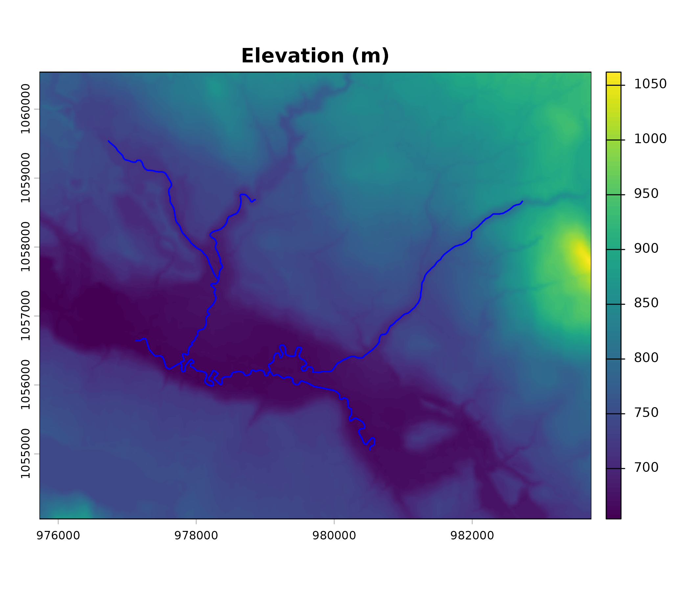
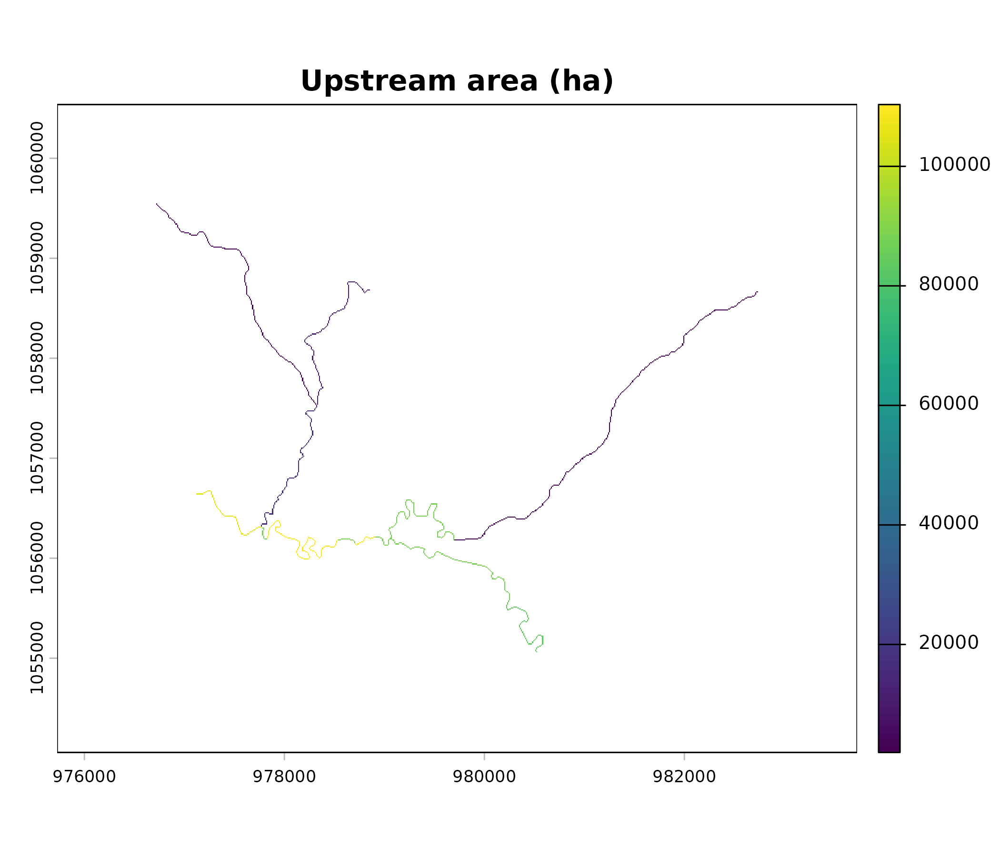
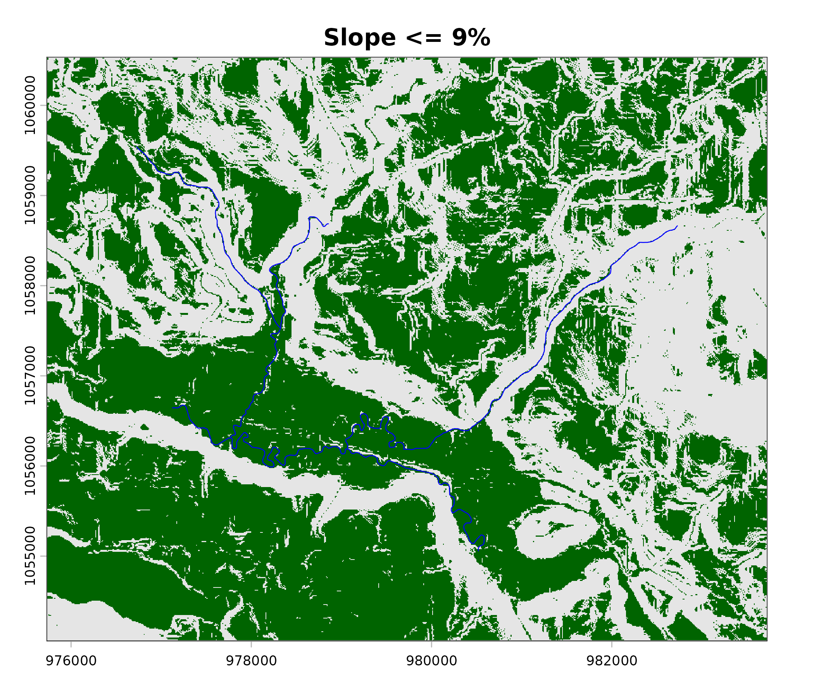
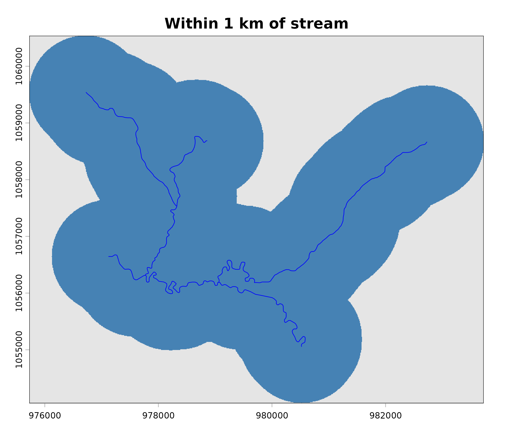
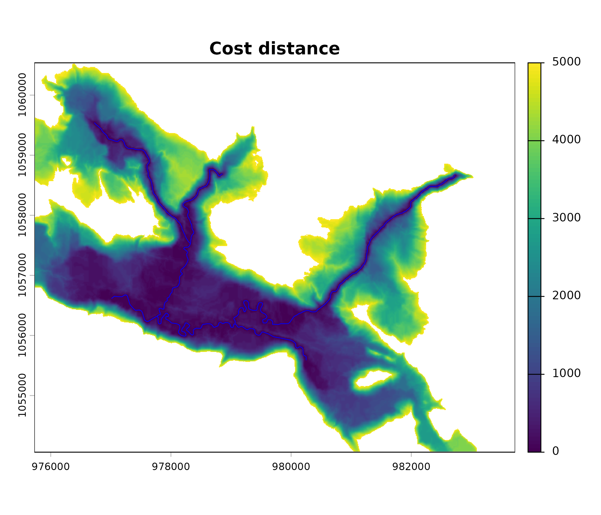
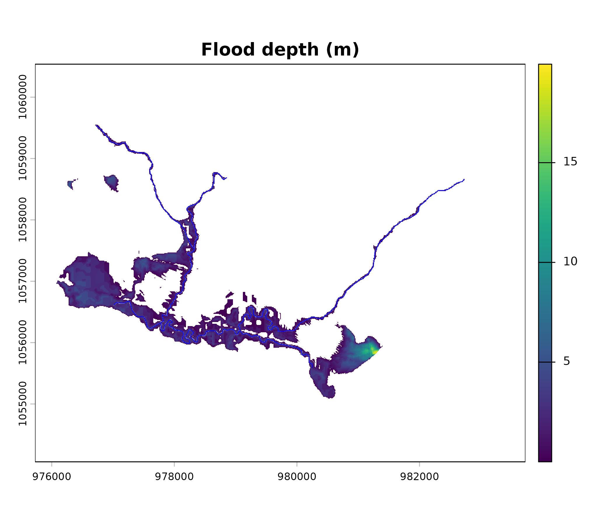
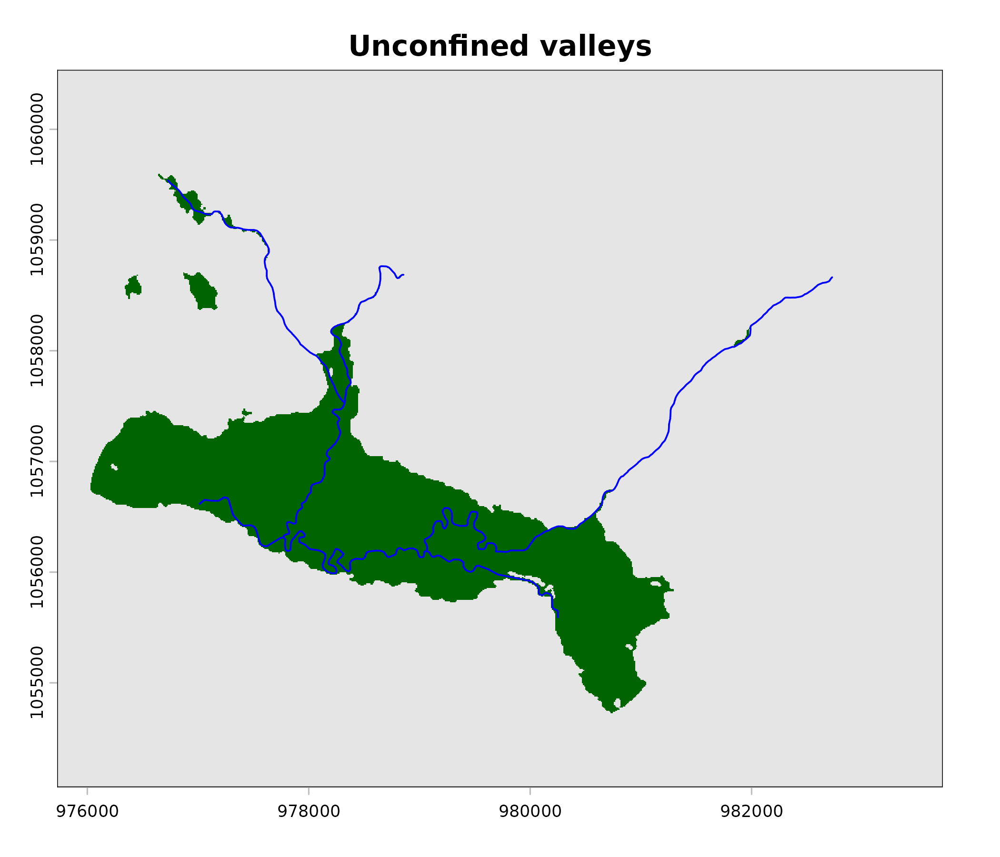
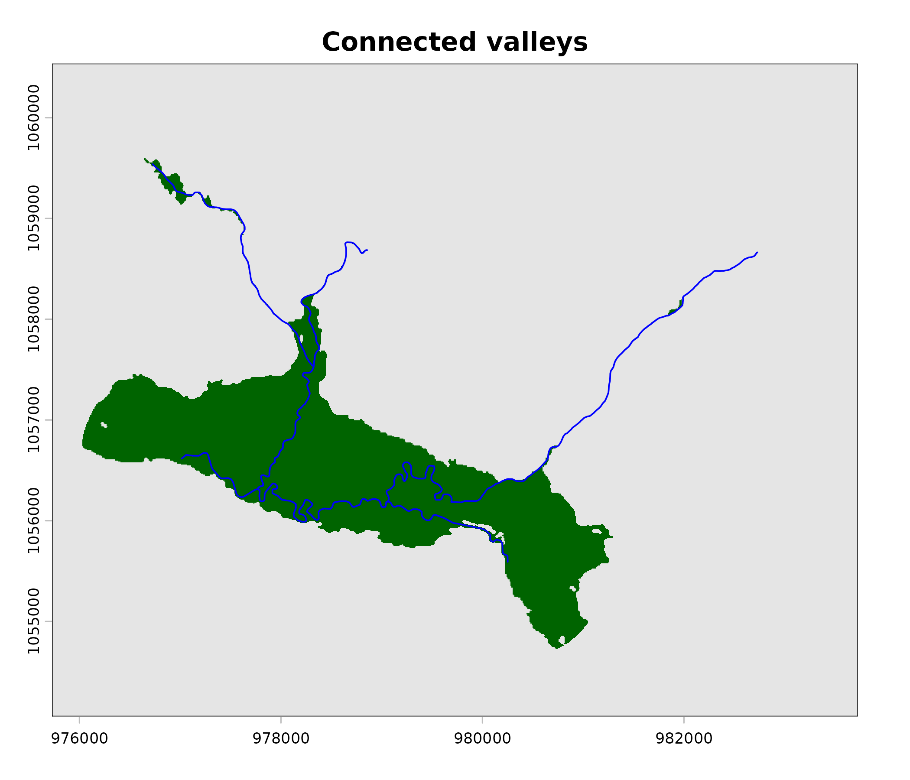
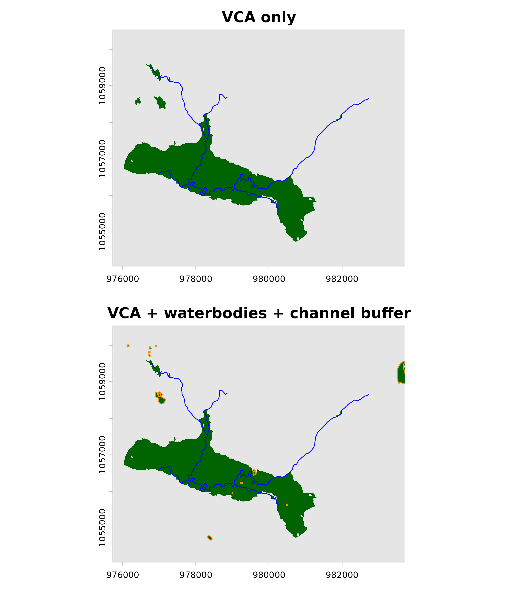

Valley confinement from DEM and stream network
Source:vignettes/valley-confinement.Rmd
valley-confinement.RmdThis vignette walks through the full flooded pipeline on
a section of Neexdzii Kwah (Bulkley River) near Topley, BC. The test
data covers ~8 km of mainstem plus tributaries (Richfield Creek, Cesford
Creek, Robert Hatch Creek) at 10 m resolution.
The bundled stream network is filtered to order 4+ coho potential
habitat (bcfishpass.streams_co_vw). This focuses the
floodplain delineation on the mainstem corridor and major tributaries —
the streams most relevant to restoration planning and where investment
has the greatest impact on higher-value salmon habitat. Filtering also
constrains the analysis-of-interest (AOI) for practical downstream
applications like orthophoto acquisition and review, where cost control
matters. All watershed tributaries contribute to floodplain health, but
a bring-your-own-DEM tool benefits from demonstrating the pipeline on a
focused corridor. See data-raw/network_extract.R for the
extraction script.
Load data
library(flooded)
library(terra)
#> terra 1.9.1
library(sf)
#> Linking to GEOS 3.12.1, GDAL 3.8.4, PROJ 9.4.0; sf_use_s2() is TRUE
dem <- rast(system.file("testdata/dem.tif", package = "flooded"))
slope <- rast(system.file("testdata/slope.tif", package = "flooded"))
streams <- st_read(
system.file("testdata/streams.gpkg", package = "flooded"),
quiet = TRUE
)
cat("DEM:", ncol(dem), "x", nrow(dem), "pixels at", res(dem)[1], "m\n")
#> DEM: 800 x 648 pixels at 10 m
cat("Streams:", nrow(streams), "segments\n")
#> Streams: 50 segments
cat("Upstream area range:", range(streams$upstream_area_ha), "ha\n")
#> Upstream area range: 1928.765 110337.4 ha
cat("Mean annual precip range:", range(streams$map_upstream), "mm\n")
#> Mean annual precip range: 526 587 mm
plot(dem, main = "Elevation (m)")
plot(st_geometry(streams), add = TRUE, col = "blue", lwd = 1.5)
DEM with stream network overlay.
Step 1: Rasterize streams
Burn the stream network onto the DEM grid (Figure @ref(fig:plot-dem)) using upstream contributing area as the cell value (Figure @ref(fig:plot-streams)). This is what the VCA bankfull regression expects — it estimates flood depth from contributing area in hectares.
stream_r <- fl_stream_rasterize(streams, dem, field = "upstream_area_ha")
plot(stream_r, main = "Upstream area (ha)")
Rasterized streams coloured by upstream area (ha).
Step 2: Precipitation
The VCA bankfull regression has a precipitation term that strongly controls flood depth:
bankfull_width = (upstream_area ^ 0.280) * 0.196 * (precip ^ 0.355)
bankfull_depth = bankfull_width ^ 0.607 * 0.145
flood_depth = bankfull_depth * flood_factorWith precip = 1 (the default), the precipitation term
drops out and flood depths are dramatically underestimated. For the
Bulkley mainstem (upstream_area_ha ~ 110,000), the
difference is ~2 m vs ~8 m flood depth.
The test data includes map_upstream — mean annual
precipitation (mm) from fwapg/ClimateBC, carried as a stream attribute.
We rasterize it alongside the streams to create a spatially varying
precipitation surface at stream cells.
precip_r <- fl_stream_rasterize(streams, dem, field = "map_upstream")
cat("Precip at stream cells:", range(values(precip_r), na.rm = TRUE), "mm\n")
#> Precip at stream cells: 526 587 mmStep 3: Individual mask components
The VCA combines four spatial criteria. Let’s inspect each one.
Slope mask
Cells with slope <= 9% (the VCA default) represent potentially flat valley floor (Figure @ref(fig:plot-slope-mask)).
mask_slope <- fl_mask(slope, threshold = 9, operator = "<=")
cat("Gentle slope:", sum(values(mask_slope) == 1, na.rm = TRUE), "cells\n")
#> Gentle slope: 280449 cells
plot(mask_slope, col = c("grey90", "darkgreen"), main = "Slope <= 9%",
legend = FALSE)
plot(st_geometry(streams), add = TRUE, col = "blue", lwd = 0.8)
Slope mask: green = slope <= 9%.
Distance mask
Cells within 1000 m of a stream (half the default
max_width = 2000; Figure @ref(fig:plot-dist-mask)).
mask_dist <- fl_mask_distance(stream_r, threshold = 1000)
cat("Within 1 km:", sum(values(mask_dist) == 1, na.rm = TRUE), "cells\n")
#> Within 1 km: 277943 cells
plot(mask_dist, col = c("grey90", "steelblue"), main = "Within 1 km of stream",
legend = FALSE)
plot(st_geometry(streams), add = TRUE, col = "blue", lwd = 0.8)
Distance mask: corridor within 1 km of streams.
Cost distance
Accumulated cost (slope-weighted) distance from streams (Figure @ref(fig:plot-cost)). The VCA default threshold is 2500.
cost <- fl_cost_distance(slope, stream_r)
mask_cost <- fl_mask(cost, threshold = 2500, operator = "<")
cat("Cost < 2500:", sum(values(mask_cost) == 1, na.rm = TRUE), "cells\n")
#> Cost < 2500: 110827 cells
plot(cost, main = "Cost distance", range = c(0, 5000))
plot(st_geometry(streams), add = TRUE, col = "blue", lwd = 0.8)
Cost distance from streams. Warm colours = high cost.
Flood model
The bankfull regression estimates flood depth from upstream contributing area and precipitation, interpolates the water surface outward from streams, and identifies cells below the flood surface (Figure @ref(fig:plot-flood)).
flood <- fl_flood_model(dem, stream_r, flood_factor = 6, precip = precip_r,
max_width = 2000)
cat("Flooded cells:", sum(values(flood[["flooded"]]) == 1, na.rm = TRUE), "\n")
#> Flooded cells: 61845
depth <- flood[["flood_depth"]]
depth[depth == 0] <- NA
plot(depth, main = "Flood depth (m)")
plot(st_geometry(streams), add = TRUE, col = "blue", lwd = 0.8)
Flood model: depth above terrain (m).
Step 4: Full VCA pipeline
fl_valley_confine() chains all the above (slope +
distance + cost + flood masks), applies morphological cleanup (closing,
hole filling, small patch removal, majority filter), and returns a
binary valley raster (Figure @ref(fig:plot-valleys)).
Note the precip argument — without it, flood depths are
~4x too shallow and the resulting valley is significantly narrower.
valleys <- fl_valley_confine(
dem, streams,
field = "upstream_area_ha",
slope_threshold = 9,
max_width = 2000,
cost_threshold = 2500,
flood_factor = 6,
precip = precip_r
)
n_valley <- sum(values(valleys) == 1, na.rm = TRUE)
cat("Valley cells:", n_valley, "/", ncell(valleys),
"(", round(100 * n_valley / ncell(valleys), 1), "%)\n")
#> Valley cells: 54418 / 518400 ( 10.5 %)
plot(valleys, col = c("grey90", "darkgreen"),
main = "Unconfined valleys", legend = FALSE)
plot(st_geometry(streams), add = TRUE, col = "blue", lwd = 1.2)
Unconfined valleys (green) with stream network.
Step 5: Post-processing
Connect to streams
Keep only valley patches that touch a stream cell — removes isolated flat areas disconnected from the network (Figure @ref(fig:plot-connected)).
connected <- fl_patch_conn(valleys, stream_r)
cat("Connected valley cells:",
sum(values(connected) == 1, na.rm = TRUE), "\n")
#> Connected valley cells: 53585
plot(connected, col = c("grey90", "darkgreen"),
main = "Connected valleys", legend = FALSE)
plot(st_geometry(streams), add = TRUE, col = "blue", lwd = 1.2)
Valley patches connected to streams.
Trim with exclusion masks
fl_flood_trim() subtracts user-supplied masks. For
example, you could trim by urban areas, steep terrain, railways, or
waterbodies. Here we demonstrate by removing cells on slopes > 5% (a
stricter threshold).
steep_mask <- fl_mask(slope, threshold = 5, operator = ">")
trimmed <- fl_flood_trim(connected, steep_mask)
cat("After trimming steep cells:",
sum(values(trimmed) == 1, na.rm = TRUE), "\n")
#> After trimming steep cells: 36601Assemble multiple layers
fl_flood_assemble() unions multiple binary rasters. This
is useful when combining outputs from different flood models or data
sources.
# Example: union the connected valleys with a wider flood-only mask
flooded_mask <- flood[["flooded"]]
flooded_mask <- ifel(is.na(flooded_mask), 0L, flooded_mask)
assembled <- fl_flood_assemble(connected, flooded_mask)
cat("Assembled cells:", sum(values(assembled) == 1, na.rm = TRUE), "\n")
#> Assembled cells: 63285Adding waterbodies and channel buffer
The VCA operates on terrain alone — lakes and wetlands appear as donut holes in the valley raster because the water surface reads differently than surrounding terrain. Similarly, at coarse DEM resolution the stream channel itself can be sub-pixel and excluded from the output.
fl_valley_confine() addresses both:
-
channel_buffer— auto-detected when streams have achannel_widthcolumn. Buffers each stream segment by half its channel width and adds to the output. This is a DEM correction, not a habitat buffer. Streams with NAchannel_widthare skipped for the buffer but still included in the VCA flood model via the bankfull regression. Users pulling lower-order streams may encounter NA widths — the channel width model (Thorley et al., 2021) does not yet cover most first-order streams. -
waterbodies— an optionalsfpolygon layer of lakes and wetlands. Rasterized as-is (no buffer) and added to the output via logical OR. No spatial filtering is applied — pre-filter to valley-bottom features before calling if headwater waterbodies are not wanted.
waterbodies <- st_read(
system.file("testdata/waterbodies.gpkg", package = "flooded"),
quiet = TRUE
)
cat("Waterbodies:", nrow(waterbodies), "features\n")
#> Waterbodies: 16 features
cat("Types:", paste(names(table(waterbodies$waterbody_type)),
table(waterbodies$waterbody_type), sep = "=", collapse = ", "), "\n")
#> Types: L=10, W=6
valleys_wb <- fl_valley_confine(
dem, streams,
field = "upstream_area_ha",
slope = slope,
precip = precip_r,
waterbodies = waterbodies
)
n_wb <- sum(values(valleys_wb) == 1, na.rm = TRUE)
cell_area <- prod(res(dem))
cat("VCA only: ", round(n_valley * cell_area / 1e4, 1), "ha\n")
#> VCA only: 544.2 ha
cat("VCA + features: ", round(n_wb * cell_area / 1e4, 1), "ha\n")
#> VCA + features: 553.5 ha
cat("Features added: ", round((n_wb - n_valley) * cell_area / 1e4, 1), "ha\n")
#> Features added: 9.3 ha
par(mfrow = c(2, 1), mar = c(2, 4, 2, 1))
plot(valleys, col = c("grey90", "darkgreen"),
main = "VCA only", legend = FALSE)
plot(st_geometry(streams), add = TRUE, col = "blue", lwd = 1)
plot(valleys_wb, col = c("grey90", "darkgreen"),
main = "VCA + waterbodies + channel buffer", legend = FALSE)
plot(st_geometry(streams), add = TRUE, col = "blue", lwd = 1)
if (nrow(waterbodies) > 0) {
plot(st_geometry(waterbodies), add = TRUE, border = "darkorange",
lwd = 1.2)
}
Valley delineation without (top) and with (bottom) waterbodies and channel buffer. Dark green = VCA valley floor, blue lines = streams, orange outlines = waterbody polygons (lakes and wetlands) added via logical OR. Waterbodies fill donut holes left by the terrain-based VCA where flat water surfaces read differently than surrounding floodplain.
Precipitation matters
The VCA bankfull regression includes a precipitation term
(precip ^ 0.355) that scales flood depth with local
climate. In BC, map_upstream (mean annual precipitation in
mm) is available as a stream attribute from fwapg (the Freshwater Atlas
Postgres layer). For other jurisdictions, any gridded precipitation
product will work — rasterize it to the DEM grid and pass it as the
precip argument.
Omitting precipitation (precip = 1, the default)
underestimates flood depth by roughly 4x in wet climates (~500 mm MAP).
This produces a valley that is about half the width of the correct
result:
valleys_no_precip <- fl_valley_confine(
dem, streams, field = "upstream_area_ha",
precip = 1
)
n_no <- sum(values(valleys_no_precip) == 1, na.rm = TRUE)
cat("Without precip:", n_no, "cells (",
round(100 * n_no / ncell(dem), 1), "%)\n")
#> Without precip: 27522 cells ( 5.3 %)
cat("With precip: ", n_valley, "cells (",
round(100 * n_valley / ncell(dem), 1), "%)\n")
#> With precip: 54418 cells ( 10.5 %)Performance
Several terra operations inside
fl_valley_confine() support multi-threading (focal filters,
distance calculations, raster math). Set threads before running:
terra::terraOptions(threads = 12) # adjust to your machineOn an Apple M4 Max (16 cores, 12 performance), this reduced a
Neexdzii Kwah run (~2,700 km², 27M cells, 1165 stream segments) from
~3.5 minutes to ~1 minute. The remaining time is dominated by
terra::costDist() and terra::interpIDW(),
which are single-threaded.
Summary
Key tuning parameters:
| Parameter | Default | Effect |
|---|---|---|
slope_threshold |
9% | Higher = more valley floor included |
max_width |
2000 m | Analysis corridor width |
cost_threshold |
2500 | Higher = valley extends further up hillslopes |
flood_factor |
6 | Higher = deeper flood, more floodplain |
precip |
1 | MAP in mm — critical for realistic flood depth |
waterbodies |
NULL | sf polygons of lakes/wetlands to fill donut holes |
channel_buffer |
auto | Buffer streams by channel_width (DEM correction) |
size_threshold |
5000 m² | Minimum valley patch area |
hole_threshold |
2500 m² | Maximum hole size to fill |